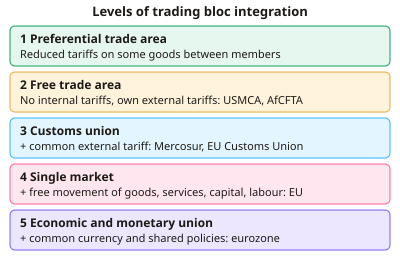

A-level Geography Year 13 · Topic 12
Trade, development and human rights
Trade, development and human rights explores how trade shapes development, and how human rights are protected around the world.
We will study patterns of global trade, free trade and protectionism, and the links between trade, aid and development.
Then we measure development and inequality, examine human rights, and evaluate international intervention.
- 6 subtopics
- 258 questions
- Free: 12.1 notes and 10 questions
In this topic
- 12.1Patterns of global trade: flows, trading blocs and access to marketsFree below · 30 questions
- 12.2Free trade, protectionism, tariffs, WTO and trade disputesOpen in Full Marks · 36 questions
- 12.3Trade and development: fair trade, aid, debt and trade-led growthOpen in Full Marks · 70 questions
- 12.4Measuring development and global inequality: HDI, GNI, Gini and development gapsOpen in Full Marks · 69 questions
- 12.5Human rights: Universal Declaration, categories of rights, abuses and enforcementOpen in Full Marks · 27 questions
- 12.6Intervention: military action, sanctions, aid, NGOs and the responsibility to protectOpen in Full Marks · 26 questions
12.1 · Free notes
Patterns of global trade: flows, trading blocs and access to markets

Key points
- Global trade is the exchange of goods and services across borders. World merchandise exports are worth over $24 trillion a year. Services are a smaller but faster-growing share, and the UK is a major services exporter.
- The main trade flows link East Asia (China, Japan, South Korea), the EU and North America. China has been the world's largest goods exporter since about 2009 and runs large trade surpluses, while the USA runs a persistent trade deficit.
- Trade has grown through containerisation, falling transport and communication costs, trade liberalisation (GATT/WTO) and the spread of TNCs. About 80% of world merchandise trade by volume moves by sea.
- Global value chains (GVCs) split production across countries. Components and intermediate goods cross borders several times before final assembly, as with smartphones and cars.
- Trading blocs form in stages of integration: preferential trade area → free trade area (no internal tariffs, e.g. USMCA, AfCFTA) → customs union (adds a common external tariff, e.g. Mercosur) → single market (free movement of goods, services, capital and labour, e.g. EU) → economic and monetary union (eurozone).
- Blocs can cause trade creation (cheaper imports from a partner replace higher-cost domestic output) or trade diversion (imports switch from a lower-cost non-member to a higher-cost member because of the external tariff).
- Newer mega-blocs include RCEP (in force 2022, ASEAN plus China, Japan, South Korea, Australia and New Zealand), CPTPP and the African Continental Free Trade Area (AfCFTA), which began trading in 2021 and aims to raise low intra-African trade.
- Access to markets is restricted by tariffs and non-tariff barriers such as quotas, standards and customs delays. Tariff escalation (higher tariffs on processed goods) limits value-adding in developing countries.
- Least developed countries (LDCs) have only about 1% of world exports. Many depend on a few primary commodities with volatile prices, and the Prebisch–Singer hypothesis predicts a long-run fall in their terms of trade.
- Terms of trade = (export price index ÷ import price index) × 100. A fall means each unit of exports buys fewer imports. Brexit (UK left the single market in January 2021) and shocks such as COVID-19 and the war in Ukraine have prompted reshoring and supply-chain diversification.
In more detail
- Biggest exporter: China exported about $3.4 trillion of goods in 2023, more than any other country.
- Market access: the EU's "Everything But Arms" scheme lets the least developed countries export almost anything to the EU tariff-free.
- New blocs: the African Continental Free Trade Area (from 2021) brings together over 50 countries.
- Services: the UK is the world's second-largest exporter of services, especially finance.
- Commodity dependence: around two-thirds of developing countries rely on commodities for more than 60% of their export earnings.
Practice
Patterns of global trade: flows, trading blocs and access to markets: 10 questions
Pick an answer to check it, or open the answer for the explanation.
1. Which type of trading bloc has no internal tariffs and a common external tariff, but does not require free movement of labour?
- Free trade area
- Economic and monetary union
- Customs union
- Preferential trade area
Show answer
C: Customs union. A customs union adds a common external tariff to a free trade area. Free movement of labour, capital and services only comes with a single market.
2. A country's export price index falls from 100 to 90 while its import price index rises from 100 to 120. What are its new terms of trade?
- 75
- 90
- 120
- 108
Show answer
A: 75. Terms of trade = 90 ÷ 120 × 100 = 75. This is a deterioration: each unit of exports now buys 25% fewer imports than before.
3. A customs union is formed. A member now imports steel from a higher-cost partner instead of a cheaper non-member because of the external tariff. This is:
- Comparative advantage
- Dumping
- Trade diversion
- Trade creation
Show answer
C: Trade diversion. Trade diversion happens when the external tariff shifts imports from a lower-cost non-member to a higher-cost member, reducing efficiency.
4. Which statement about USMCA is correct?
- It replaced NAFTA in 2020 and links the USA, Mexico and Canada
- It was created in 1957 by the USA and Mexico
- It includes the UK and Japan as full members
- It is a customs union with a single currency
Show answer
A: It replaced NAFTA in 2020 and links the USA, Mexico and Canada. USMCA entered into force in July 2020 and replaced NAFTA. It is a free trade area with no common currency and no common external tariff.
5. Approximately what share of world merchandise trade by volume is carried by sea?
- About 10%
- About 30%
- About 50%
- About 80%
Show answer
D: About 80%. Around 80% of goods trade by volume goes by sea (UNCTAD). Containerisation and large bulk carriers have made shipping very cheap per tonne.
6. The Prebisch–Singer hypothesis argues that, over time, developing countries exporting mainly primary products will experience:
- Deteriorating terms of trade
- Improving terms of trade
- Rising tariffs on their imports
- Falling import dependence
Show answer
A: Deteriorating terms of trade. Prices of primary commodities tend to rise more slowly than prices of manufactures. Commodity exporters therefore need more exports to buy the same imports.
7. Country X exports $60 billion and imports $90 billion of goods. Which statement is correct?
- Trade deficit of $30 billion
- Trade deficit of $150 billion
- Trade surplus of $150 billion
- Trade surplus of $30 billion
Show answer
A: Trade deficit of $30 billion. Trade balance = exports − imports = 60 − 90 = −$30 billion. Negative means a deficit, because imports exceed exports.
8. Which of these is a non-tariff barrier to trade?
- An import quota limiting car imports to 50,000 a year
- A common external tariff on all imports
- A specific duty of £2 per kg on cheese
- A 10% ad valorem duty on shoes
Show answer
A: An import quota limiting car imports to 50,000 a year. A quota limits the quantity of imports. The other options are all taxes on imports, so they are tariffs.
9. Why do least developed countries account for only about 1% of world exports?
- Tariffs on their goods are higher than on all other countries' goods
- They are banned from joining the WTO
- Reliance on a few low-value primary exports and weak infrastructure
- They have no comparative advantage in any product
Show answer
C: Reliance on a few low-value primary exports and weak infrastructure. LDCs often depend on unprocessed commodities with volatile prices and have poor transport and energy infrastructure. Many are WTO members and get preferential access.
10. A smartphone is designed in the USA, uses components from South Korea and Japan, and is assembled in China. This best illustrates:
- Production fragmented across borders in a global value chain
- Import substitution industrialisation
- A single market in services
- Protectionism by the USA
Show answer
A: Production fragmented across borders in a global value chain. Global value chains split design, component manufacture and assembly between countries. They create large flows of intermediate goods.
Keep going in Full Marks
Full Marks has 30 questions on Patterns of global trade: flows, trading blocs and access to markets (20 more than here), set out in practice levels. You also get notes and 3D models for all 6 subtopics of Trade, development and human rights, plus games, timed exams and past papers.
On your exam board
- AQATopic 3: Global systems and global governance
- OCR ATopic 1.1: Global connections: trade in the contemporary world, Topic 2.1: Global governance: human rights
- EdexcelTopic 9A: Global development and connections: health, human rights and intervention
- CambridgeTopic 13: Global interdependence, Topic 14: Economic transition